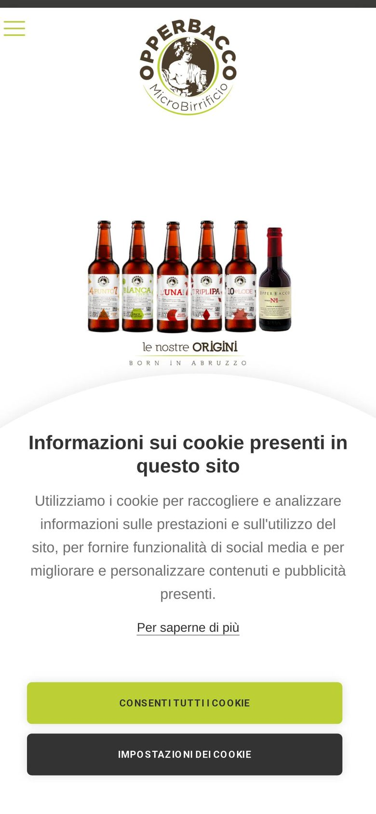
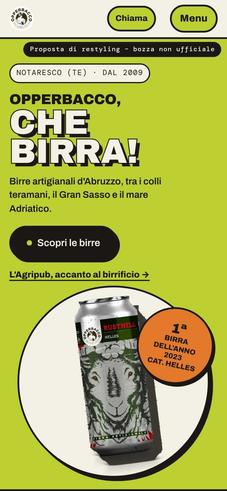
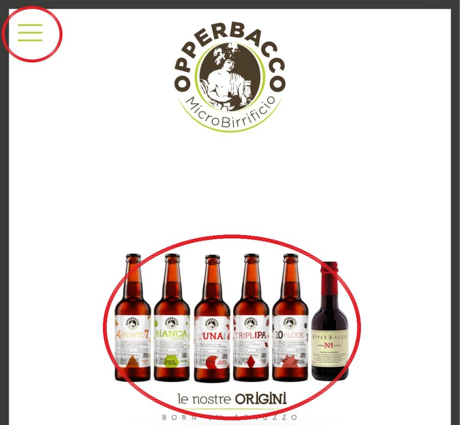

Metà schermo coperto
Al primo accesso da telefono il banner «Informazioni sui cookie presenti in questo sito» copre il 54% dello schermo.
Microbirrificio Opperbacco · Notaresco (TE)
La prima schermata che vede chi apre opperbacco.it dal telefono, e come potrebbe essere. Trascina il cursore.


OggiCon noi← oggi · trascina · con noi →
Al primo accesso da telefono il banner «Informazioni sui cookie presenti in questo sito» copre il 54% dello schermo.

Nella prima schermata ci sono logo e bottiglie piccole; nella home i numeri di telefono sono testo semplice, non si possono toccare per chiamare.
Via Casarino, 21 · +39 085 799 43 32Fondo della stessa pagina
Via Casarino 19 · +39 085 203 97 90
Sulla stessa pagina compaiono due civici e due numeri fissi diversi: chi vuole venire o chiamare non sa quale usare.
Tempo per vedere il contenuto principale
5,8 s → 0,5 s
Peso della pagina
8,3 MB → 1,5 MB
File scaricati all'apertura
128 → 22
Misure del 30/10/2026 con un telefono simulato (Chrome, cache vuota).
Meglio dal telefono